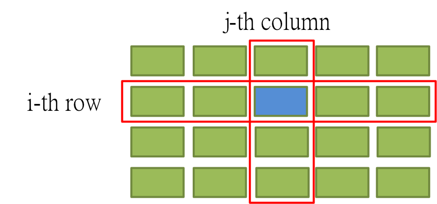

MLDM Monday
R Basic Tutorial
Dboy
Taiwan UseR Group for Hackers
Why R?
Why Not R?
- 1. It is FREE!
- 2. It is open!
- 3. It is popular! Kaggle
- 4. It is powerful!
It is cool to be a hacker!!

圖片來源
Our Gaol Today: Become a Cool Guy!
Mini Project: Barnsley Fern Fractal
Work this cool picture out.
Mini Project: Barnsley Fern Fractal
Work this cool picture out.
And you can claim that you can do sketch by a computer!
最後讓我們打個廣告XDD
接下來的系列課程:
- ETL
- Data Analysis
- Data Visulization
最後讓我們打個廣告XDD
接下來的系列課程:
- ETL
- Data Analysis
- Data Visulization
最後讓我們打個廣告XDD
接下來的系列課程:
- ETL
- Data Analysis
- Data Visulization
最後讓我們打個廣告XDD
接下來的系列課程:
- ETL
- Data Analysis
- Data Visulization
最後讓我們打個廣告XDD
接下來的系列課程:
- ETL
- Data Analysis
- Data Visulization
在今天的課程裡也會讓大家體驗一下每個課程的主題是什麼。
Syllabus
Syllabus
- DATA: Where the Story Begins
- 資料屬性
- 資料形態
- Basic Operations - Phase I
- Logical Operations: &, |, ==
- Subsetting - Phase I
- Vector and List
- Matrix Subsetting - Phase I
- Data Frame Subsetting - Phase I
- Subsetting - Phase II
- Matrix Subsetting - Phase II
- Data Frame Subsetting - Phase II
- Merging
- cbind v.s rbind
- Basic Operation - Phase II
- Arithmetic Operations
- Loop
- if/else if/else
- for
- while
- Mini Project
- Barnsley Fern Fractal
- Battleship
Data: Where the Story Begins
DATA
以資料屬性來分：
- Character (字串)
- Integer (整數)
- Numeric (雙浮點數 / 實數)
- Logical (邏輯值)
- Complex (複數)
以資料形態來分：
- 一般變數
- Vector
- Matrix
- Factor and Data Frame
Examples
(x <- 'R is easy to learn!') # 這是字串
(y <- 3) # 這是整數
(z <- pi) # 圓周率
## [1] "R is easy to learn!"
## [1] 3
## [1] 3.142
Examples (Cont.)
(k <- 1 + 2i) # 複數
(boo1 <- TRUE) # TRUE (or T for short)
(boo2 <- FALSE) # FALSE (or F for short)
## [1] 1+2i
## [1] TRUE
## [1] FALSE
Logical Operation
Basic Operations: & (and), | (or), ==
bol1 <- T; bol2 <- TRUE
bol3 <- F
('Dboy' == 'Dboy')
[1] TRUE
(bol1 == bol2)
[1] TRUE
(bol1 & bol2)
[1] TRUE
(bol3 | 4 > 5)
[1] FALSE
Basic Operations: >, <, >=, <=
4 > 2
[1] TRUE
1 >= 2
[1] FALSE
a <- NA
a == NA # 要用 is.na(a) 才會回傳 TRUE。(另外還有 is.nan)
[1] NA
Fun Time
於 Console 中依續執行下列程式碼。
- my_vec <- c(1, 2, 5, 90, 37)
- ind <- my_vec >= 5
- sum(ind)
Fun Time
於 Console 中依續執行下列程式碼。
- my_vec <- c(1, 2, 5, 90, 37)
- ind <- my_vec >= 5
- sum(ind)
猜猜看答案會是多少? (sum 是 R 中的內建函式，用以求和。)
Subsetting Phase I: Index
Vector and List
Vector
c(): concatenation function
範例：
vec1 <- c(1, 2, 3)
vec2 <- c('a', 'b', 'c')
vector 中所有元素都必須是同一種資料屬性。
Named Vector:
(Bob <- c(age = 27, height = 187, weight = 80))
## age height weight
## 27 187 80
Funtime
mix_vec1 <- c('a', 2)
mix_vec2 <- c(2, T)
猜看看結果會如何?
- [1] "a" "2"
- [1] 2 1
- Why??
Useful Methods (Vector)
- length():
- 語法: length(my_vec)
- 傳回 my_vec 的長度
- names():
- 語法: names(my_vec)
- 傳回 my_vec 各維度的名字。
Examples
vec <- c(4, 5, 6, 11, 5)
length(vec)
Bob
names(Bob)
## [1] 5
## age height weight
## 27 187 80
## [1] "age" "height" "weight"
Examples
c() 也可以被用來結合兩個向量。
x <- c(1:5)
y <- c(2, 4, 8)
z <- c(x, y)
z
## [1] 1 2 3 4 5 2 4 8
Exercise
定義一個向量 me 記錄自己的身高(公分)、體重(公斤)與年齡。
Exercise
定義一個向量 me 記錄自己的身高(公分)、體重(公斤)與年齡。
如果我還想記錄頭髮的顏色跟電話號碼呢?
- 把 hair_color='Black' 存進去?
- 如果電話是 +886 911333966 呢?
List
List
list 是非常方便好用的資料形態。尤其是需儲存不同類型資料的時候，特別好用。
還記得剛剛提過的優先順序嗎？
- c(1, '2')
- c(1, T)
比較：
- list(1, '2')
- list(1, T)
List: Examples
Bob <- list(age=27, weight = 80,
favorite_data_name = 'iris', favorite_data = head(iris))
- 我們可以用 list 來儲存異質的資料。
- 但如何從中擷取出想要的資料呢?
- 在接下來的 Subsetting 單元中將一一介紹。
Vector Subsetting - Phase I
Subsetting by Index
Syntax: vec[index]
Examples:
vec <- c(1, 5, 10, 33, 6)
vec[3]
vec[length(vec)]
## [1] 10
## [1] 6
Subsetting by Name
Syntax: vec["name"]
Dboy <- c(age=27, weight=82, heigh=172)
Dboy["age"]
## age
## 27
List Subsetting - Phase I
Subsetting by Index
Syntax: a_list[index] or a_list[[index]]
Examples:
Bob[1]; class(Bob[1])
Bob[[1]]; class(Bob[[1]])
## $age
## [1] 27
## [1] "list"
## [1] 27
## [1] "numeric"
Subsetting by Name
Syntax: a_list["name"] or a_list[["name"]]
Examples:
Bob["age"]
Bob[["age"]]
## $age
## [1] 27
## [1] 27
Matrix Subsetting - Phase I
Matrix: First Look
A Matrix is something looks like this:

Dimension
A Matrix has two dimensions, denoted by i and j.
i for row indexing, j for column indexing.
Dimension
i alone can specify one row.

Dimension
j alone can specify one column.

Dimension
i together with j can specify one element in a matrix.

Matrix in R
M1 <- matrix(c(1:144), 12, 12)

Matrix: Subsetting by Index.
Syntax: my_matrix[i, ] or my_matrix[, j]
M1[6, ]
## [1] 6 18 30 42 54 66 78 90 102 114 126 138
Matrix: Subsetting by Index
M1[, 6]
## [1] 61 62 63 64 65 66 67 68 69 70 71 72

Matrix: Rename
colnames(M1) <- LETTERS[1:12]
Matrix: Subsetting by Name
M1[, 'F']
## [1] 61 62 63 64 65 66 67 68 69 70 71 72

Data Frame Subsetting - Phase I
Data Frame: First Look
We take iris data set for example

Dimension
Similer to the matrix, a data frame also has two dimensions.

Data Frame: Subsetting by Index
iris[6, ]
## Sepal.Length Sepal.Width Petal.Length Petal.Width Species
## 6 5.4 3.9 1.7 0.4 setosa
Data Frame: Subsetting by Index
iris[, 2]
## [1] 3.5 3.0 3.2 3.1 3.6 3.9 3.4 3.4 2.9 3.1 3.7 3.4

Data Frame: Subsetting by Column Name
iris[, "Sepal.Width"]
## [1] 3.5 3.0 3.2 3.1 3.6 3.9 3.4 3.4 2.9 3.1 3.7 3.4
Data Frame: Rename
colnames(iris) <- c("Sepal.L", "Sepal.W", "Petal.L", "Petal.W", "Species")
iris[, ]
## Sepal.L Sepal.W Petal.L Petal.W Species
## 1 5.1 3.5 1.4 0.2 setosa
## 2 4.9 3.0 1.4 0.2 setosa
## 3 4.7 3.2 1.3 0.2 setosa
## 4 4.6 3.1 1.5 0.2 setosa
## 5 5.0 3.6 1.4 0.2 setosa
## 6 5.4 3.9 1.7 0.4 setosa
## 7 4.6 3.4 1.4 0.3 setosa
## 8 5.0 3.4 1.5 0.2 setosa
## 9 4.4 2.9 1.4 0.2 setosa
## 10 4.9 3.1 1.5 0.1 setosa
## 11 5.4 3.7 1.5 0.2 setosa
## 12 4.8 3.4 1.6 0.2 setosa
Subsetting Phase II: Indices
Vector and List
Vector: Reference by Indices
In R, we use c() to specify multiple indices.
Example:
(Dboy)
(Dboy[c(1, 3)])
## age weight heigh
## 27 82 172
## age heigh
## 27 172
Vector: Multi Indexing with Expression
Examples:
data(cars)
speed <- cars[, "speed"]
speed[speed > 5]
## [1] 7 7 8 9 10 10 10 11 11 12 12 12 12 13 13 13 13 14 14 14 14 15 15
## [24] 15 16 16 17 17 17 18 18 18 18 19 19 19 20 20 20 20 20 22 23 24 24 24
## [47] 24 25
Vector: Multi Indexing with which()
Syntax: which(expression)
Examples:
my_vec <- runif(30, 0, 1) # 用 runif 從(0, 1)均勻分佈中抽取 30 個值。
(ind <- which(my_vec > 0.5))
(my_vec[ind])
## [1] 3 4 6 7 8 9 10 13 14 16 21 22 23 26 29 30
## [1] 0.9916 0.7548 0.8688 0.9199 0.7925 0.6050 0.8816 0.8873 0.7259 0.8394
## [11] 0.6789 0.7920 0.6141 0.7296 0.6543 0.7705
Vector: Multi Indexing with which()
Syntax: which(expression)
Examples:
(ind <- which(names(Dboy) %in% c("age", "weight")))
Dboy[ind]
## [1] 1 2
## age weight
## 27 82
List: Subsetting by Indices
Similarly, we use c() for multiple indexing in a list.
Syntax: my_list[c(ind1, ind2, ...)]
Example:
Bob[c(1, 3)]
## $age
## [1] 27
##
## $favorite_data_name
## [1] "iris"
List: Subsetting with which()
Example:
(names(Bob))
(ind <- which(names(Bob) %in% c("age", "favorite_data")))
## [1] "age" "weight" "favorite_data_name"
## [4] "favorite_data"
## [1] 1 4
List: Subsetting with which()
Example:
Bob[ind]
## $age
## [1] 27
##
## $favorite_data
## Sepal.Length Sepal.Width Petal.Length Petal.Width Species
## 1 5.1 3.5 1.4 0.2 setosa
## 2 4.9 3.0 1.4 0.2 setosa
## 3 4.7 3.2 1.3 0.2 setosa
## 4 4.6 3.1 1.5 0.2 setosa
## 5 5.0 3.6 1.4 0.2 setosa
## 6 5.4 3.9 1.7 0.4 setosa
Matrix Subsetting - Phase II
Matrix: Subsetting with Indices
Syntax: my_matrix[c(rowind1, rowind2, ...), c(colind1, colind2, ...)]
Example
M1[c(2, 4), 2:4]
## B C D
## [1,] 14 26 38
## [2,] 16 28 40
Matrix: Subsetting with Indices
Syntax: my_matrix[c(rowind1, rowind2, ...), c(colind1, colind2, ...)]
Example:

Data Frame: Subsetting with Indices
Syntax: myDataFrame[c(rowind1, rowind2, ...), c(colind1, colind2, ...)]
Example:
iris[c(2, 5), seq(from=1, to = 5, by = 2)]
## Sepal.L Petal.L Species
## 2 4.9 1.4 setosa
## 5 5.0 1.4 setosa
Data Frame: Subsetting with Indices
Syntax: myDataFrame[c(rowind1, rowind2, ...), c(colind1, colind2, ...)]
Example:

Merging: rbind and cbind
rbind
Merging: rbind
First Look:

Merging: rsbind
- rbind: Row-like Binding (merge by column).
- Merge two data frames (or matrices) like rows.
Merging: rbind
Syntax: rbind(A, B) where A and B are two data frames or matrices
Again, let's play with iris data set.
Example:
data(iris)
iris[1:3, ]
## Sepal.Length Sepal.Width Petal.Length Petal.Width Species
## 1 5.1 3.5 1.4 0.2 setosa
## 2 4.9 3.0 1.4 0.2 setosa
## 3 4.7 3.2 1.3 0.2 setosa
Merging: cbind
Syntax: rbind(A, B) where A and B are two data frames or matrices
Again, let's play with iris data set.
Example:
iris[100:103, ]
## Sepal.Length Sepal.Width Petal.Length Petal.Width Species
## 100 5.7 2.8 4.1 1.3 versicolor
## 101 6.3 3.3 6.0 2.5 virginica
## 102 5.8 2.7 5.1 1.9 virginica
## 103 7.1 3.0 5.9 2.1 virginica
Merging: rbind
Syntax: rbind(A, B) where A and B are two data frames or matrices
Again, let's play with iris data set.
Example:
rbind(iris[1:3, ], iris[100:103, ])
## Sepal.Length Sepal.Width Petal.Length Petal.Width Species
## 1 5.1 3.5 1.4 0.2 setosa
## 2 4.9 3.0 1.4 0.2 setosa
## 3 4.7 3.2 1.3 0.2 setosa
## 100 5.7 2.8 4.1 1.3 versicolor
## 101 6.3 3.3 6.0 2.5 virginica
## 102 5.8 2.7 5.1 1.9 virginica
## 103 7.1 3.0 5.9 2.1 virginica
cbind
Merging: cbind
First Look:
Merging: cbind
- cbind: Column-like Binding (merge by row).
- Merge two data frames (or matrices) like columns.
Merging: cbind
Syntax: cbind(A, B) where A and B are two data frames or matrices
Our beloved iris data set.
Example:
iris[1:5, 2:4]
## Sepal.Width Petal.Length Petal.Width
## 1 3.5 1.4 0.2
## 2 3.0 1.4 0.2
## 3 3.2 1.3 0.2
## 4 3.1 1.5 0.2
## 5 3.6 1.4 0.2
Merging: cbind
Syntax: rbind(A, B) where A and B are two data frames or matrices
Our beloved iris data set.
Example:
iris[101:105, 1:2]
## Sepal.Length Sepal.Width
## 101 6.3 3.3
## 102 5.8 2.7
## 103 7.1 3.0
## 104 6.3 2.9
## 105 6.5 3.0
Merging: cbind
Syntax: cbind(A, B) where A and B are two data frames or matrices
Our beloved iris data set.
Example:
cbind(iris[1:5, 2:4], iris[101:105, 1:2])
## Sepal.Width Petal.Length Petal.Width Sepal.Length Sepal.Width
## 1 3.5 1.4 0.2 6.3 3.3
## 2 3.0 1.4 0.2 5.8 2.7
## 3 3.2 1.3 0.2 7.1 3.0
## 4 3.1 1.5 0.2 6.3 2.9
## 5 3.6 1.4 0.2 6.5 3.0
sort() and order()
The Difference Between sort() and order()
- sort(): sort (or order) a vector or factor (partially) into ascending or descending order.
- order(): order returns a permutation which rearranges its first argument into ascending or descending order, breaking ties by further arguments.

The Difference Between sort() and order()
Let the Code Reveals Itself
Examples:
Sepal.Length <- iris[, "Sepal.L"]
(sort(Sepal.Length))
(order(Sepal.Length))
## [1] 4.4 4.6 4.6 4.7 4.8 4.9 4.9 5.0 5.0 5.1 5.4 5.4
## [1] 9 4 7 3 12 2 10 5 8 1 6 11
Ordering by Multiple Arguments
Examples:
ind <- order(iris[, "Sepal.L"], iris[, "Sepal.W"])
(iris_ordered <- iris[ind, ])
## Sepal.L Sepal.W Petal.L Petal.W Species
## 9 4.4 2.9 1.4 0.2 setosa
## 4 4.6 3.1 1.5 0.2 setosa
## 7 4.6 3.4 1.4 0.3 setosa
## 3 4.7 3.2 1.3 0.2 setosa
## 12 4.8 3.4 1.6 0.2 setosa
## 2 4.9 3.0 1.4 0.2 setosa
## 10 4.9 3.1 1.5 0.1 setosa
## 8 5.0 3.4 1.5 0.2 setosa
## 5 5.0 3.6 1.4 0.2 setosa
## 1 5.1 3.5 1.4 0.2 setosa
## 11 5.4 3.7 1.5 0.2 setosa
## 6 5.4 3.9 1.7 0.4 setosa
Play With It And You Will Master It!
我們用房貸餘額資料來練習!
之後會在 ETL 課程再度碰到它，也會學到進階的資料處理技巧。
Play With It And You Will Master It!
我們用房貸餘額資料來練習!
之後會在 ETL 課程再度碰到它，也會學到進階的資料處理技巧。
到這裡下載檔案。(cl_info_other.csv)
Play With It And You Will Master It!
# read.table 小技巧。
tmp <- read.table('cl_info_other.csv', sep = ',',
stringsAsFactors = F, header = T, nrows = 1000)
colClasses <- sapply(tmp, class)
DF <- read.table('cl_info_other.csv', sep = ',',
header = T, colClasses = colClasses)
Play With It And You Will Master It!
# read.table 小技巧。
tmp <- read.table('cl_info_other.csv', sep = ',',
stringsAsFactors = F, header = T, nrows = 1000)
colClasses <- sapply(tmp, class)
DF <- read.table('cl_info_other.csv', sep = ',',
stringsAsFactors = F, header = T, colClasses = colClasses)


Exercises:
- 顯示 DF 前 20 筆資料與所有欄位的名稱。
- 將 mortgage_cnt < 2053 的資料另外儲存成 banks_below。
- 將 mortgage_cnt >= 22538 的資料另外儲存成 banks_above。
- 將 banks_below 與 banks_above 合併成 DF2。
- 將 DF2 先依 mortgage_cnt 再依 mortgage_bal 排序。(Hint: order)
Exercises:
- 顯示 DF 前 20 筆資料與所有欄位的名稱。
- 將 mortgage_cnt < 2053 的資料另外儲存成 banks_below。
- 將 mortgage_cnt >= 22538 的資料另外儲存成 banks_above。
- 將 banks_below 與 banks_above 合併成 DF2。
- 將 DF2 先依 mortgage_cnt 再依 mortgage_bal 排序。(Hint: order)
學員OS: 這作業實在太 trivial 了，簡直侮辱我的智慧。
Exercises:
- 顯示 DF 前 20 筆資料與所有欄位的名稱。
- 將 mortgage_cnt < 2053 的資料另外儲存成 banks_below。
- 將 mortgage_cnt >= 22538 的資料另外儲存成 banks_above。
- 將 banks_below 與 banks_above 合併成 DF2。
- 將 DF2 先依 mortgage_cnt 再依 mortgage_bal 排序。(Hint: order)
接下來的 ETL 課程保證會滿足你的渴望!
Factor
Factor: First Look
(Petal.W <- as.factor(iris[, "Petal.W"]))
## [1] 0.2 0.2 0.2 0.2 0.2 0.4 0.3 0.2 0.2 0.1 0.2 0.2
## Levels: 0.1 0.2 0.3 0.4
Factor: First Look
(Petal.W <- as.factor(iris[, "Petal.W"]))
## [1] 0.2 0.2 0.2 0.2 0.2 0.4 0.3 0.2 0.2 0.1 0.2 0.2
## Levels: 0.1 0.2 0.3 0.4
有啥特別的? 不就多個 levels 嗎? 跟向量不是差不多?
Factor: First Look
(Petal.W <- as.factor(iris[, "Petal.W"]))
## [1] 0.2 0.2 0.2 0.2 0.2 0.4 0.3 0.2 0.2 0.1 0.2 0.2
## Levels: 0.1 0.2 0.3 0.4
同款就不同師父啊(台)
Try Try See
Try this code:
Petal.W <- as.numeric(Petal.W)
Try Try See
Try this code:
Petal.W <- as.numeric(Petal.W)
You may expect something like this:
[1] 0.2 0.2 0.2 0.2 0.2 0.4 0.3 0.2 0.2 0.1 0.2 0.2
Try Try See
This is what you really get:
as.numeric(Petal.W)
## [1] 2 2 2 2 2 4 3 2 2 1 2 2
Try Try See
A Closer Look
Vector in R

A Closer Look
Factor in R: A Key-Value Mapping
Loops
For Loop
For Loop
Syntex:
for (iterator){
#Do something here....
}
Example: 土炮 sum()
# 從 1 加到 10
final_result <- 0
for (i in 1:10){
final_result <- final_result + i
}
final_result
## [1] 55
剛剛的例子有點兒無聊....
# 讓 R 幫你驅邪避凶!!
for (i in 1:5){
system("say 'Nann Moll Ah Mi Tow Fo'")
system("say 'Ah Men'")
}
If Loop
If Loop
if / else
Syntex:
if (condition_1){
#Do something here....
} else if (conditon_2){
#Do something here
} else {
#Do something here
}
Note: else if and else are optional.
Exercise: SVM Classifier
Magic Vector:
c(1.45284450 ,-0.04625854, 0.5211828, -1.003045, -0.4641298)
Exercise: SVM Classifier
Magic Vector:
c(1.45284450, -0.04625854, 0.5211828, -1.003045, -0.4641298)
(暫時)不要問我怎麼把這個向量生出來的。(汗)
Exercise: SVM Classifier
Magic Vector:
c(1.45284450, -0.04625854, 0.5211828, -1.003045, -0.4641298)
或許你可以問助教，助教什麼都會!
Exercise: SVM Classifier
Exercise: SVM Classifier
- 計算 X1 中某一筆資料與 magic_vector 內積的結果，並儲存為 inner。
( sum(X1[i, ] * magic_vector), i 可以是1~100任何一個整數 ) - 如果 inner 大於或等於 0，print('setosa');反之，print('versicolor')
- 執行 print(y1[i])，有何發現？
Exercise: SVM Classifier
其他更精彩的資料分析模型的理論與操作，敬請期待 Data Analysis 課程!
Factor and Data Frame
R 中有很多內建資料庫，其中包括你不可以不知道的 iris 資料庫。
用法也很簡單，只要輸入以下指令：
data(iris)
head(iris)
## Sepal.Length Sepal.Width Petal.Length Petal.Width Species
## 1 5.1 3.5 1.4 0.2 setosa
## 2 4.9 3.0 1.4 0.2 setosa
## 3 4.7 3.2 1.3 0.2 setosa
## 4 4.6 3.1 1.5 0.2 setosa
## 5 5.0 3.6 1.4 0.2 setosa
## 6 5.4 3.9 1.7 0.4 setosa
Factor and Data Frame (Cont.)
names(iris) 將可以看到 iris 所有欄位的名字。
關於 factor ，我們來看看下面這個例子。
Species <- iris[, 'Species']
class(Species) # R 會告訴你他是個 factor。
Species2 <- as.numeric(Species) # 直接把 factor 轉成 numeric 向量。
Species2
# 你覺得上面這行 code 會跑出什麼呢? 試試看吧!
Useful Functions for Data Frame
給定一個名叫 data 的 data frame
names(data): 傳回 data 的所有欄位名稱。
nrow(data)/ncol(data): 傳回 data 的列 / 行數目。
head(data, n)/tail(data, n)/View(data)
which(exp)
sort/order
max/min
rbind/cbind: merge different data frames
Examples: iris
nrow(iris) # 顯示 iris 的列數
ncol(iris) # 顯示 iris 的行數
dim(iris) # 顯示 iris 的行、列數
names(iris) # 顯示 iris 的欄位名稱
## [1] 150
## [1] 5
## [1] 150 5
## [1] "Sepal.Length" "Sepal.Width" "Petal.Length" "Petal.Width"
## [5] "Species"
Examples: iris (Cont.)
head(iris, n = 10) # 顯示 iris 前 10 筆資料 (預設為 6 筆)
## Sepal.Length Sepal.Width Petal.Length Petal.Width Species
## 1 5.1 3.5 1.4 0.2 setosa
## 2 4.9 3.0 1.4 0.2 setosa
## 3 4.7 3.2 1.3 0.2 setosa
## 4 4.6 3.1 1.5 0.2 setosa
## 5 5.0 3.6 1.4 0.2 setosa
## 6 5.4 3.9 1.7 0.4 setosa
## 7 4.6 3.4 1.4 0.3 setosa
## 8 5.0 3.4 1.5 0.2 setosa
## 9 4.4 2.9 1.4 0.2 setosa
## 10 4.9 3.1 1.5 0.1 setosa
Examples: iris (Cont.)
tail(iris, n = 10) # 顯示 iris 後 10 筆資料 (預設為 6 筆)
## Sepal.Length Sepal.Width Petal.Length Petal.Width Species
## 141 6.7 3.1 5.6 2.4 virginica
## 142 6.9 3.1 5.1 2.3 virginica
## 143 5.8 2.7 5.1 1.9 virginica
## 144 6.8 3.2 5.9 2.3 virginica
## 145 6.7 3.3 5.7 2.5 virginica
## 146 6.7 3.0 5.2 2.3 virginica
## 147 6.3 2.5 5.0 1.9 virginica
## 148 6.5 3.0 5.2 2.0 virginica
## 149 6.2 3.4 5.4 2.3 virginica
## 150 5.9 3.0 5.1 1.8 virginica
Examples: iris (Cont.)
ind1 <- which(iris[, 'Sepal.Length'] >= 6.5 & iris[, 'Species'] == 'virginica')
class(ind1)
iris1 <- iris[ind1, ]
head(iris1)
## [1] "integer"
## Sepal.Length Sepal.Width Petal.Length Petal.Width Species
## 103 7.1 3.0 5.9 2.1 virginica
## 105 6.5 3.0 5.8 2.2 virginica
## 106 7.6 3.0 6.6 2.1 virginica
## 108 7.3 2.9 6.3 1.8 virginica
## 109 6.7 2.5 5.8 1.8 virginica
## 110 7.2 3.6 6.1 2.5 virginica
Examples: iris (Cont.)
ind2 <- which(iris[, 'Sepal.Length'] < 5.8 & iris[, 'Species'] == 'setosa')
iris2 <- iris[ind2, ]
head(iris2)
## Sepal.Length Sepal.Width Petal.Length Petal.Width Species
## 1 5.1 3.5 1.4 0.2 setosa
## 2 4.9 3.0 1.4 0.2 setosa
## 3 4.7 3.2 1.3 0.2 setosa
## 4 4.6 3.1 1.5 0.2 setosa
## 5 5.0 3.6 1.4 0.2 setosa
## 6 5.4 3.9 1.7 0.4 setosa
Examples: iris (Cont.)
iris3 <- rbind(iris1, iris2)
head(iris3)
## Sepal.Length Sepal.Width Petal.Length Petal.Width Species
## 103 7.1 3.0 5.9 2.1 virginica
## 105 6.5 3.0 5.8 2.2 virginica
## 106 7.6 3.0 6.6 2.1 virginica
## 108 7.3 2.9 6.3 1.8 virginica
## 109 6.7 2.5 5.8 1.8 virginica
## 110 7.2 3.6 6.1 2.5 virginica
Examples: iris (Cont.)
iris4 <- cbind(iris1[1:10, ], iris2[1:10, ])
head(iris4) # View(iris4)
## Sepal.Length Sepal.Width Petal.Length Petal.Width Species
## 103 7.1 3.0 5.9 2.1 virginica
## 105 6.5 3.0 5.8 2.2 virginica
## 106 7.6 3.0 6.6 2.1 virginica
## 108 7.3 2.9 6.3 1.8 virginica
## 109 6.7 2.5 5.8 1.8 virginica
## 110 7.2 3.6 6.1 2.5 virginica
## Sepal.Length Sepal.Width Petal.Length Petal.Width Species
## 103 5.1 3.5 1.4 0.2 setosa
## 105 4.9 3.0 1.4 0.2 setosa
## 106 4.7 3.2 1.3 0.2 setosa
## 108 4.6 3.1 1.5 0.2 setosa
## 109 5.0 3.6 1.4 0.2 setosa
## 110 5.4 3.9 1.7 0.4 setosa
Examples: iris (Cont.)
sort(iris[1:30, 2])
ind5 <- order(iris[, 'Sepal.Length'], iris[, 'Petal.Length'])
ind5[1:20]
class(ind5)
iris5 <- iris[ind5, ]
## [1] 2.9 3.0 3.0 3.0 3.0 3.1 3.1 3.2 3.2 3.3 3.4 3.4 3.4 3.4 3.4 3.4 3.4
## [18] 3.5 3.5 3.5 3.6 3.6 3.7 3.7 3.8 3.8 3.9 3.9 4.0 4.4
## [1] 14 39 43 9 42 23 7 48 4 3 30 13 46 12 31 25 2 38 10 35
## [1] "integer"
Examples: iris (Cont.)
head(iris5)
## Sepal.Length Sepal.Width Petal.Length Petal.Width Species
## 14 4.3 3.0 1.1 0.1 setosa
## 39 4.4 3.0 1.3 0.2 setosa
## 43 4.4 3.2 1.3 0.2 setosa
## 9 4.4 2.9 1.4 0.2 setosa
## 42 4.5 2.3 1.3 0.3 setosa
## 23 4.6 3.6 1.0 0.2 setosa
Examples: iris (Cont.)
我們也可以改變欄位的名字。
iris6 <- iris
colnames(iris6) <- c('SLength', 'SWidth', 'PLength', 'PWidth', 'Sp')
# 也可以用 names(iris6) <- c('SLength', 'SWidth', 'PLength', 'PWidth', 'Sp')
head(iris6)
## SLength SWidth PLength PWidth Sp
## 1 5.1 3.5 1.4 0.2 setosa
## 2 4.9 3.0 1.4 0.2 setosa
## 3 4.7 3.2 1.3 0.2 setosa
## 4 4.6 3.1 1.5 0.2 setosa
## 5 5.0 3.6 1.4 0.2 setosa
## 6 5.4 3.9 1.7 0.4 setosa
Matrix
Matrix
- 語法: matrix(elements, norw, ncol, byrow = F)
- 例子:
My_matrix1 <- matrix(1:6, 2, 3)
My_matrix2 <- matrix(1:6, 2, 3, byrow = T)
My_matrix1
My_matrix2
## [,1] [,2] [,3]
## [1,] 1 3 5
## [2,] 2 4 6
## [,1] [,2] [,3]
## [1,] 1 2 3
## [2,] 4 5 6
Basic Operations on Matrix
- +, -, *, /
- 例子:
My_matrix1 + My_matrix2
My_matrix1 * My_matrix2
## [,1] [,2] [,3]
## [1,] 2 5 8
## [2,] 6 9 12
## [,1] [,2] [,3]
## [1,] 1 6 15
## [2,] 8 20 36
Basic Operation on Matrix (Cont.)
- %*%: Matrix Mulplication
- t(): Transpose
- 例子:
vec <- c(1:3)
(t(vec))
## [,1] [,2] [,3]
## [1,] 1 2 3
Basic Operation on Matrix (Cont.)
- %*%: Matrix Mulplication
- t(): Transpose
- 例子:
my_vec <- matrix(1:3, ncol = 1)
My_matrix1 %*% my_vec
## [,1]
## [1,] 22
## [2,] 28
# My_matrix1 %*% t(my_vec)
Basic Operation on Matrix (Cont.)
- my_matrix[row_index, col_index]
- 例子:
My_matrix1[1, c(1, 3)]
## [1] 1 5
My_matrix2[, c(2, 3)]
## [,1] [,2]
## [1,] 2 3
## [2,] 5 6
Basic Operation on Matrix (Cont.)
- dim(): Dimension
- 例子:
dim(My_matrix1)
## [1] 2 3
Basic Operation on Matrix (Cont.)
- dim(): Dimension
- 例子:
dim(My_matrix1)
## [1] 2 3
It's time for mini project!
Mini Project 1: Barnsley Fern Fractal
Mini Project 1: Barnsley Fern Fractal
起始點:

With 5% probability:

With 81% probability:

With 7% probability:

With 7% probability:

Barnsley Fern Fractal
依此規則迭代出 40000 點，再把這些點畫成圖。
只要用我們有學過的 for/if 迴圈和矩陣運算就可以做到這件事。
你應該會看到:

Barnsley Fern Fractal: Tips
可以把迭代出來的點用一個 data.frame 存起來。(例如說存成 coor )
最後用 plot(x = coor[, 2], y = coor[, 1], plt = c(0, 10, -5, 5), cex = 0.1, asp = 1) 把它畫出來。
這些參數不懂沒關係，它們的唯一功能就只是讓圖變漂亮而已。(很多我也是 Google 來的XD)
Barnsley Fern Fractal: Tips
可以把迭代出來的點用一個 data.frame 存起來。(例如說存成 coor )
最後用 plot(x = coor[, 2], y = coor[, 1], plt = c(0, 10, -5, 5), cex = 0.1, asp = 1) 把它畫出來。
這些參數不懂沒關係，它們的唯一功能就只是讓圖變漂亮而已。(很多我也是 Google 來的XD)
Barnsley Fern Fractal: Tips
可以把迭代出來的點用一個 data.frame 存起來。(例如說存成 coor )
最後用 plot(x = coor[, 2], y = coor[, 1], plt = c(0, 10, -5, 5), cex = 0.1, asp = 1) 把它畫出來。
這些參數不懂沒關係，它們的唯一功能就只是讓圖變漂亮而已。(很多我也是 Google 來的XD)
敬請期待 Data Visualization 教學課程。
One Last Thing: Help Yourself by Yourself
Why?
- By this time, you are already a R user.
- However, life sucks. Bugs and problems are everywhere.
- No one can give you a hand if you does not reach out.
But How?
- ?/??: helper function in R.
- Stack overflow